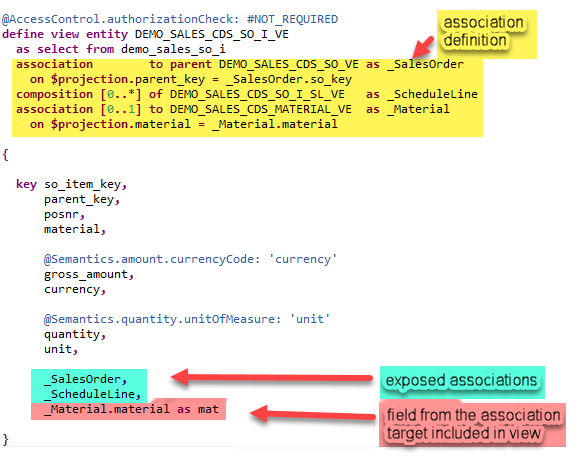

AS ABAP Release 755, ©Copyright 2026 SAP SE. All rights reserved.
ABAP - Keyword Documentation → ABAP - Core Data Services (ABAP CDS) → ABAP CDS - Data Definitions → ABAP CDS - DDL for Data Definitions → ABAP CDS - CDS Entities → ABAP CDS - View Entities → CDS DDL - DEFINE VIEW ENTITY → CDS DDL - CDS View Entity, SELECT →CDS DDL - CDS View Entity, SELECT, Associations
CDS associations offer an advanced modelling capability for CDS data models. A CDS association defines a relationship between two CDS entities. A CDS association can be used to include fields from the association target in the current view, and/or it can be published for usage in other CDS entities or in ABAP SQL.
As soon as an association is used in a path expression, for example, to specify a field from the association target in the element list of a view, it is internally transformed into a join. So technically, a CDS association is instantiated as join. The benefit of a CDS association compared to a join is that it can be reused in different positions and that it renders the task of coding complex join expressions superfluous. Further details about the use cases of CDS associations and by which join type they are represented are explained below in section CDS associations and joins.
Compositions and to-parent associations are special kinds of CDS associations. They define an existential dependency of the composition child to its composition parent. For example, a sales order item (composition child) always belongs to a sales order header (composition parent).
Example
The CDS view entity DEMO_SALES_CDS_SO_I_VE shown below returns information about sales order items. It defines three associations:
In the SELECT list, _SalesOrder and _ScheduleLine are exposed. They can be accessed externally, but the current view doesn't use any data from them and no join is generated. From the association _Material, the field material is included in the view. So this association is instantiated as join. Since it is not published, it cannot be used in other CDS view entities or in ABAP SQL.

For further details, read the following sections: